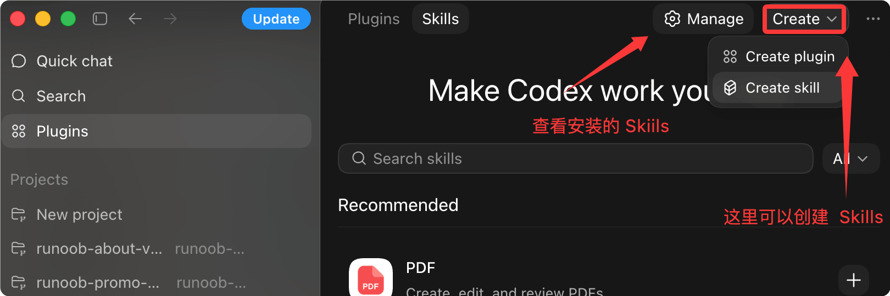
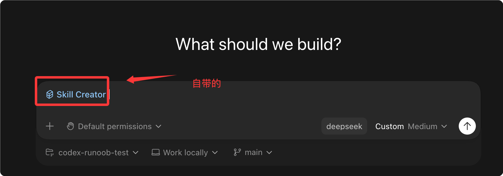
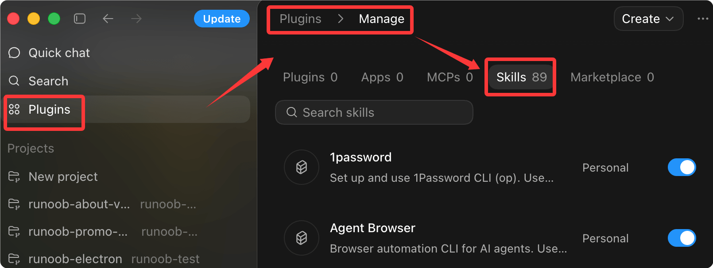
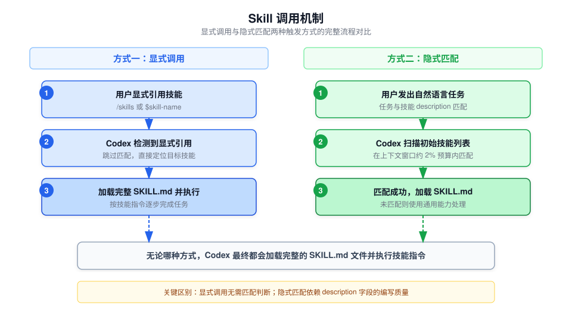
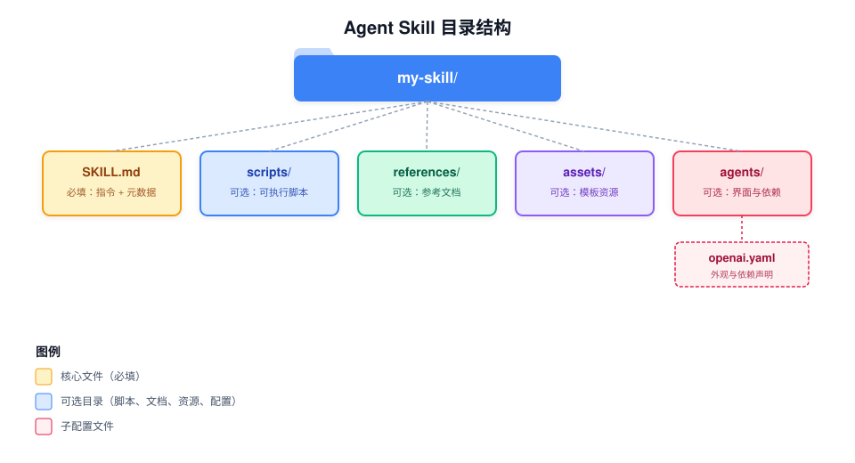

Codex Agent Skills 技能系统
Agent Skills（代理技能）是 Codex 的任务扩展机制，通过将指令、资源和可选脚本打包为标准化技能包，让 Codex 能够可靠地执行特定工作流。
Agent Skills（代理技能）核心为一个文件夹，文件夹内必须包含SKILL.md文件。该文件至少需填写名称、描述等元数据，同时附带指引，告诉智能代理如何完成特定任务。技能包还可集成脚本、参考资料、模板及其他各类资源。
my-skill/ ├── SKILL.md # 必备文件：元数据 + 执行指引 ├── scripts/ # 可选：可执行脚本 ├── references/ # 可选：参考文档 ├── assets/ # 可选：模板、各类资源文件 └── ... # 其他额外文件与目录
术语说明
- AI agents：AI智能代理（行业通用译法）
- Agent Skills：代理技能（专属概念，保留固定称谓）
- metadata：元数据
- workflows：业务流程/执行流程
什么是 Agent Skills
Skills 是可复用工作流的编写格式。
每个 Skill 本质上是一个包含 SKILL.md 文件的目录，Codex 读取其中的指令并按步骤执行。
你可以把 Skill 理解为给 Codex 写的"标准操作流程"——定义清楚做什么、什么时候做、怎么做，Codex 就能在合适的时机自动激活它，或者在你明确调用时执行它。
Skills 是"编写格式"，Plugins（插件）是"分发格式"。先用 Skills 设计工作流本身，需要分发给其他开发者时再打包为 Plugin。
Skills 在 Codex CLI、IDE 扩展和 Codex App 中均可使用。
可以在插件中查看或创建 Skills：

Codex 自带 Skill Creator，点击上图中的 Creat skill 就会跳转到创建 Skill 的窗口，我们可以直接告诉它，做什么 Skill：

查看已安装 Skills：

技能工作原理
Codex 采用 渐进式信息披露（Progressive Disclosure） 机制来管理上下文窗口，避免一次性加载所有技能内容挤占提示词空间。
渐进式加载流程
Codex 启动时，只会加载每个技能的名称、描述和文件路径作为初始列表。
只有当 Codex 决定使用某个技能时，才会加载完整的 SKILL.md 指令内容。
为了不挤占提示词空间，初始技能列表的字符数被限制在模型上下文窗口的 约 2%，或上下文窗口未知时的 8,000 个字符。
如果安装了过多技能，Codex 会先缩短描述文字；如果仍然超出限制，部分技能可能不会出现在初始列表中，Codex 会显示警告。
这个预算限制仅针对初始技能列表。Codex 选中某个技能后，仍然会读取该技能的完整 SKILL.md 文件。
两种触发方式
Codex 支持两种技能激活方式：

显式调用
在提示词中直接引用技能。在 CLI 或 IDE 中，使用 /skills 命令或输入 $ 符号来指定一个技能。
显式调用时，Codex 不需要做任何匹配判断，直接加载完整 SKILL.md 并执行。
隐式匹配
当你发出的任务描述与某个技能的 description 字段匹配时，Codex 会自动选择该技能。
隐式匹配的准确性完全取决于 description 字段的编写质量。
编写 description 时要前置核心用例和触发关键词，这样即使描述被缩短，Codex 仍然能正确匹配。
技能目录结构
一个 Skill 是一个包含 SKILL.md 文件的目录，可以包含可选的脚本、参考文档、资源文件和元数据配置。
my-skill/
├── SKILL.md # 必备项：使用指引 + 元数据
├── scripts/ # 可选：可执行代码
├── references/ # 可选：参考文档
├── assets/ # 可选：模板、各类资源
└── agents/
└── openai.yaml

各文件/目录的职责如下：
| 文件/目录 | 是否必填 | 说明 |
|---|---|---|
| SKILL.md | 必填 | 技能的核心指令文件，必须包含 name 和 description 字段 |
| scripts/ | 可选 | 存放可执行代码，用于需要确定性行为或调用外部工具的场景 |
| references/ | 可选 | 存放额外的参考文档，供 Codex 在执行技能时查阅 |
| assets/ | 可选 | 存放模板、图片等静态资源文件 |
| agents/openai.yaml | 可选 | 配置 UI 元数据、调用策略和工具依赖声明 |
快速开始：创建你的第一个技能
推荐使用内置的技能创建器来快速生成技能框架。
使用 skill-creator 创建
在 Codex 中输入以下命令即可启动交互式创建流程：
实例
$skill-creator
创建器会依次询问以下问题：
| 步骤 | 问题 | 说明 |
|---|---|---|
| 1 | 这个技能做什么？ | 定义技能要完成的任务 |
| 2 | 什么时候触发？ | 决定是显式调用还是隐式匹配触发 |
| 3 | 纯指令还是包含脚本？ | 默认推荐纯指令模式，简洁且易维护 |
手动创建
你也可以手动创建技能目录和 SKILL.md 文件：
实例
name: my-skill
description: 说明这个技能应该在什么时候触发、什么时候不触发。
---
Codex 将遵循以下技能指令执行任务。
Codex 会自动检测技能文件的变更。如果更新后技能没有立即生效，请重启 Codex。
配置说明
技能存储位置
Codex 会从仓库级别、用户级别、管理员级别和系统级别四个范围读取技能。
对于仓库级别，Codex 会从当前工作目录向上一直扫描到仓库根目录，查找 .agents/skills 目录。
如果两个技能具有相同的 name，Codex 不会合并它们；两者都会出现在技能选择器中。
| 作用范围 | 存储路径 | 适用场景 |
|---|---|---|
| REPO | $CWD/.agents/skills | 当前工作目录下的技能，适用于特定模块或微服务的团队共享技能 |
| REPO | $CWD/../.agents/skills | 上级目录中的技能，适用于嵌套目录结构中的共享区域 |
| REPO | $REPO_ROOT/.agents/skills | 仓库根目录的技能，适用于整个仓库所有子目录共享的基础技能 |
| USER | $HOME/.agents/skills | 用户的个人技能集，适用于该用户在任何仓库中都能使用的技能 |
| ADMIN | /etc/codex/skills | 机器或容器级别的共享技能，适用于 SDK 脚本、自动化和管理员默认技能 |
| SYSTEM | 由 OpenAI 内置打包 | 面向广泛受众的内置技能，如 skill-creator 和 plan 技能，所有用户启动 Codex 即可使用 |
Codex 支持技能目录的符号链接，扫描时会跟随符号链接目标。
以上路径适用于本地开发和发现。如需将技能分发给单个仓库之外的用户，或将其与应用集成一起打包，请使用 Plugins 机制。
启用与禁用技能
在 ~/.codex/config.toml 中使用 [[skills.config]] 配置项，可以在不删除文件的情况下禁用技能：
实例
[[skills.config]]
path = "/path/to/skill/SKILL.md"
enabled = false
修改配置文件后需要重启 Codex 才能生效。
可选元数据配置
在 agents/openai.yaml 中可以为技能配置 UI 元数据、调用策略和工具依赖声明：
实例
# 界面配置：控制技能在 Codex App 中的显示方式
interface:
display_name: "面向用户的显示名称"
short_description: "面向用户的简短描述"
icon_small: "./assets/small-logo.svg"
icon_large: "./assets/large-logo.png"
brand_color: "#3B82F6"
default_prompt: "与技能一起使用的可选外围提示词"
# 策略配置：控制技能的调用行为
policy:
allow_implicit_invocation: false # 设为 false 可禁用隐式匹配
# 依赖配置：声明技能所需的工具
dependencies:
tools:
- type: "mcp"
value: "openaiDeveloperDocs" # MCP 服务器名称
description: "OpenAI Docs MCP server"
transport: "streamable_http" # 传输协议
url: "https://developers.openai.com/mcp" # MCP 服务地址
allow_implicit_invocation 的默认值为 true。设为 false 后，Codex 不会根据用户提示词隐式调用该技能，但显式的 $skill 调用仍然有效。
| 配置项 | 类型 | 默认值 | 说明 |
|---|---|---|---|
| interface.display_name | 字符串 | 空 | 在 Codex App 中显示的名称 |
| interface.short_description | 字符串 | 空 | 在 Codex App 中显示的简短描述 |
| interface.icon_small | 路径 | 空 | 小图标路径（SVG 格式） |
| interface.icon_large | 路径 | 空 | 大图标路径（PNG 格式） |
| interface.brand_color | 颜色值 | 空 | 品牌色，用于界面展示 |
| interface.default_prompt | 字符串 | 空 | 使用该技能时的默认外围提示词 |
| policy.allow_implicit_invocation | 布尔值 | true | 是否允许 Codex 隐式匹配并调用该技能 |
| dependencies.tools | 数组 | 空 | 声明技能依赖的 MCP 工具，每项需指定 type、value、description 等 |
技能分发与安装
通过 Plugins 分发技能
直接的技能文件夹适用于本地编写和仓库范围的工作流。
如果需要分发可复用的技能、将多个技能打包在一起、或将技能与应用集成一起发布，应该打包为 Plugin。
一个 Plugin 可以包含一个或多个技能，还可以选择性打包应用映射、MCP 服务器配置和展示资源。
安装精选技能
使用 $skill-installer 可以安装内置技能之外的精选技能到本地 Codex 环境中。
例如，安装 $linear 技能：
实例
$skill-installer linear
你也可以通过 skill-installer 从其他仓库下载技能。
Codex 会自动检测新安装的技能，如果没有立即出现，重启 Codex 即可。
skill-installer 适用于本地设置和实验。如需将你自己的技能进行可复用分发，请优先使用 Plugins 机制。
最佳实践
| 原则 | 说明 | 适用场景 |
|---|---|---|
| 一个技能只做一件事 | 保持每个技能职责单一，避免技能承担过多不相关任务 | 所有技能都应遵循 |
| 指令优先于脚本 | 能用指令描述的流程就不要写脚本，除非需要确定性行为或调用外部工具 | 大部分场景推荐纯指令模式 |
| 指令使用祈使句式 | 用祈使句编写步骤，明确每个步骤的输入和输出 | 编写 SKILL.md 指令时 |
| 测试 description 的匹配效果 | 用实际提示词测试是否能正确触发技能，确保 description 的精准度 | 编写完技能后 |
| 前置核心触发词 | 将关键使用场景和触发词放在 description 前面，确保缩短后仍能匹配 | description 可能被截断时 |
常见问题
技能更新后没有生效？
Codex 会自动检测技能文件的变更。
如果更新后技能没有出现在列表中，重启 Codex 即可。
两个技能重名会怎样？
Codex 不会合并同名技能，两者都会出现在技能选择器中。
建议在不同的作用范围中避免使用相同的技能名称，以免造成混淆。
隐式匹配不准确怎么办？
首先检查 description 是否清楚地描述了该技能的使用场景和边界。
将核心触发词前置，避免关键信息出现在描述的后半部分。
如果不需要隐式匹配，可以在 agents/openai.yaml 中将 allow_implicit_invocation 设为 false。
什么时候用 Skills，什么时候用 Plugins？
Skills 是编写格式，适合本地开发和仓库内的团队共享。
当你需要将技能分发给其他开发者、打包多个技能、或与应用集成一起发布时，使用 Plugins 格式。
初始技能列表被截断怎么处理？
精简每个技能的 description，使其简短且精准。
确保最核心的触发词出现在 description 的最前面，这样即使被缩短也能正确匹配。
对于当前任务不常用的技能，可以考虑暂时禁用。

点我分享笔记